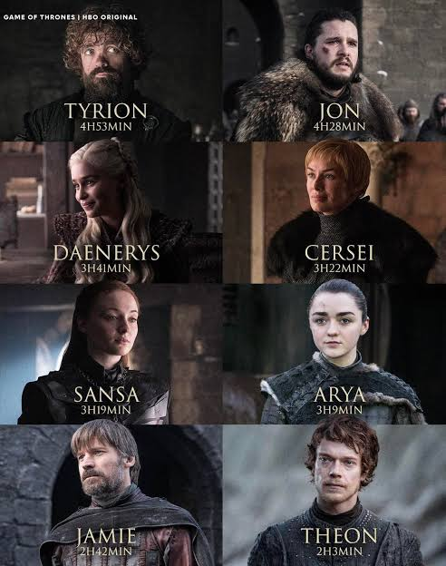

Main Characters
Game of Thrones has several main characters as it follows many regions and storylines through out eight seasons. Ned Stark is the honorable Lord of Winterfell who travels south to serve as Hand of the King before being executed. John Snow is Ned's resilient supposed bastard son who joins the Night's Watch to guard the icy northern wall. Daeneryus Targeryanis the exiled princess who raises three dragons to reclaim the Iron Throne.Tyrion Lannister is the sharp-witted, mistreated dwarf who uses his high intelligence to navigate dangerous political schemes. Arya Stark is Ned's fierce, independent younger daughter who trains as a deadly assassin. Cersei and her twin brother Jammie Lannister a skilled swordsman known as the Kingslayer for murdering a mad king Cerci a ruthless and ambitious queen who stops at nothing to protect her family's power.Bran Stark is Ned's son who becomes the mystical "Three-Eyed Raven" with the power to see past and future events.

- Bran Stark
- Jammie Lannister
- Arya Stark
- Ned Stark
Deeper dive
Lord Eddard Stark was the head of House Stark. Eddard's execution and revealing of the illegitimacy of Cersei Lannister's children was the spark of the War of the Five Kings, being posthumously responsible for the involvement of four of the kings in this war.Jon Snow, born Aegon Targaryen, is the son of Lyanna Stark and Rhaegar Targaryen, the late Prince of Dragonstone. After successfully capturing a wight and presenting it to the Lannisters as proof that the Army of the Dead are real, Jon pledges himself and his army to Daenerys Targaryen.Queen Daenerys I Targaryen is the younger sister of Rhaegar Targaryen and Viserys Targaryen, the paternal aunt of Jon Snow, and the youngest child of King Aerys II Targaryen and Queen Rhaella Targaryen, who were both ousted from the Iron Throne during Robert Baratheon's rebellion.Lord Tyrion Lannister is the youngest child of Lord Tywin Lannister and younger brother of Cersei and Jaime Lannister. A dwarf, he uses his wit and intellect to overcome the prejudice he faces.Queen Cersei I Lannister is the widow of King Robert Baratheon and Queen of the Seven Kingdoms. She is the daughter of Lord Tywin Lannister, twin sister of Jaime Lannister and elder sister of Tyrion Lannister.Ser Jaime Lannister is the eldest son of Tywin Lannister. With Cersei's ascension to the Iron Throne, Jaime was appointed as the new commander of the Lannister armies but left the position to honor and help the North face the White Walkers.Sansa Stark is the eldest daughter of Eddard Stark of Winterfell and his wife Catelyn. She initially starts off with a very naive view of the world, but as time goes on and she and her family suffer one cruelty and betrayal after another, she becomes a more hardened and learned individual.Arya Stark is the third child of Eddard Stark and Catelyn Stark. After narrowly escaping the persecution of House Stark by House Lannister, Arya is trained as a Faceless Man at the House of Black and White in Braavos, and uses her new skills to bring those who have wronged her family to justice.Brandon Stark, commonly called Bran, is the fourth child and second son of Eddard and Catelyn Stark. Bran is a warg and currently the new Three-Eyed Raven, using his supernatural gifts to assist his family in the war against the White Walkers.